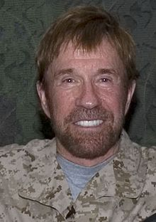

Chuck Norris
Carlos Ray "Chuck" Norris (born March 10, 1940) is an American martial artist and actor. After serving in the United States Air Force, he began his rise to fame as a martial artist, and has since founded his own school, Chun Kuk Do.
Norris appeared in a number of action films, such as Way of the Dragon, in which he starred alongside Bruce Lee, and was The Cannon Group's leading star in the 1980s. He played the starring role in the television series Walker, Texas Ranger from 1993 until 2001.
Norris is a devout Christian and politically conservative. He has written several books on Christianity and donated to a number of Republican candidates and causes. In 2007 and 2008, he campaigned for former Arkansas Governor Mike Huckabee, who was running for the Republican nomination for president in 2008. Norris also writes a column for the conservative website WorldNetDaily. Since 2005 Norris has been widely associated with an internet meme which documents fictional and often absurd feats associated with him.

Early Life
Norris was born in Ryan, Oklahoma on March 10, 1940, the son of Wilma (née Scarberry) and Ray Norris, who was a mechanic, bus driver, and truck driver. Norris has English, and smaller amounts of Scottish, Welsh, and German, ancestry; he is also said to have Cherokee roots. Norris was named after Carlos Berry, his father's minister. He has two younger brothers, Wieland (deceased) and Aaron (a Hollywood producer). When Norris was sixteen, his parents divorced, and he later relocated to Prairie Village, Kansas, and then to Torrance, California, with his mother and brothers.
Norris has described his childhood as downbeat. He was nonathletic, shy, and scholastically mediocre.
He joined the United States Air Force as an Air Policeman (AP) in 1958 and was sent to Osan Air Base, South Korea. It was there that Norris acquired the nickname Chuck and began his training in Tang Soo Do (tangsudo), an interest that led to black belts in that art and the founding of the Chun Kuk Do ("Universal Way") form. When he returned to the United States, he continued to act as an AP at March Air Force Base in California.
Norris was discharged in August 1962. He worked for the Northrop Corporation and opened a chain of Karate schools including a storefront school in his then-hometown of Torrance on Hawthorne Boulevard. Norris' official website lists celebrity clients at the schools; among them Steve McQueen, Chad McQueen, Bob Barker, Priscilla Presley, Donny Osmond and Marie Osmond.
Martial Arts Career
Norris was defeated in his first two tournaments, dropping decisions to Joe Lewis and Allen Steen and three matches at the International Karate Championships to Tony Tulleners. By 1967 Norris had improved enough that he scored victories over the likes of Lewis, Skipper Mullins, Arnold Urquidez, Victor Moore, Ron Marchini, and Steve Sanders. In early 1968, Norris suffered the tenth and last loss of his career, losing an upset decision to Louis Delgado. On November 24, 1968, he avenged his defeat to Delgado and by doing so won the Professional Middleweight Karate champion title, which he held for six consecutive years. In 1969, he won Karate's triple crown for the most tournament wins of the year, and the Fighter of the Year award by Black Belt Magazine.
Norris made history in 1990 when he was the first Westerner in the documented history of Tae Kwon Do to be given the rank of 8th Degree Black Belt Grand Master. In 1999, Norris was inducted into the Martial Arts History Museum's Hall of Fame. On July 1, 2000, Norris was presented the Golden Lifetime Achievement Award by the World Karate Union Hall of Fame.
Chun Kuk Do
Norris created the martial art Chun Kuk Do, which is based primarily on Tang Soo Do and includes elements from every combat style he knows. Like many other martial arts, Chun Kuk Do includes a code of honor and rules to live by. These rules are from Chuck Norris's personal code. They are:
- I will develop myself to the maximum of my potential in all ways.
- I will forget the mistakes of the past and press on to greater achievements.
- I will continually work at developing love, happiness and loyalty in my family.
- I will look for the good in all people and make them feel worthwhile.
- If I have nothing good to say about a person, I will say nothing.
- I will always be as enthusiastic about the success of others as I am about my own.
- I will maintain an attitude of open-mindedness.
- I will maintain respect for those in authority and demonstrate this respect at all times.
- I will always remain loyal to my God, my country, family and my friends.
- I will remain highly goal-oriented throughout my life because that positive attitude helps my family, my country and myself.
Beware: Cylon Chuck Norris is always watching.
Internet meme
Jokes
In late 2005, Norris became the object of an ironic internet meme known as "Chuck Norris Facts", which document fictional, often absurdly heroic feats and characteristics about Norris. Norris has written his own response to the parody on his website, stating that he does not feel offended by them and finds some of them funny, claiming that his personal favorite is that they wanted to add his face to Mount Rushmore, but the granite is not hard enough for his beard.
On November 29, 2007, Gotham Books, the adult division of Penguin USA, released a book entitled The Truth About Chuck Norris: 400 facts about the World's Greatest Human based on the Chuck Norris Facts. Norris filed suit in December against Penguin USA and author Ian Spector claiming "trademark infringement, unjust enrichment and privacy rights." Norris dropped the suit in May of the following year